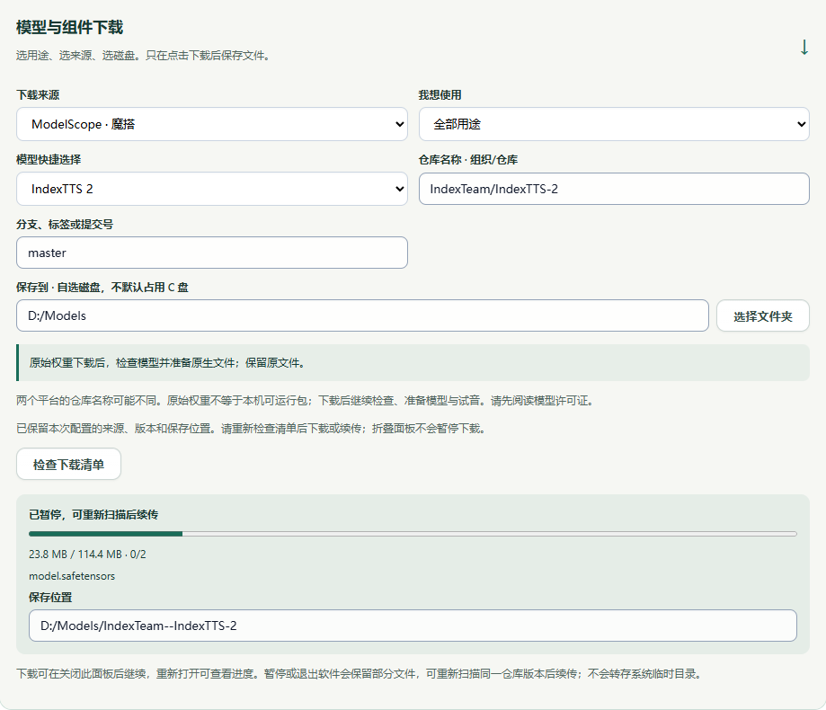

MODELSCOPE · 一次配置，多处选择
从魔搭准备模型
在配置引导中选用途、模型和来源，仓库地址会自动填好。下载到自己选择的磁盘，再加入本地模型库。
按这五步操作
- 打开「配置引导」→「模型与参数」→「模型与组件下载」。
- 来源选「ModelScope · 魔搭」，再选「用途」与「模型快捷选择」。13 个快捷项均有对应地址。
- 选择 D 盘等自己的模型目录，再点「检查下载清单」。检查仅获取文件清单，不下载权重。
- 确认大小与所选文件后，主动点击「下载所选文件」。SenseVoice 默认只选 model.int8.onnx 和 tokens.txt；Whisper 只选 ggml-base.bin；HY-MT2 只选 Q4_K_M。
- 完成后加入「本地模型库」，检查模型、按需要准备原生文件，再用一小段录音试用。下载完成不等于推理已经通过。

地址清单
各平台名称不一定相同。下面列的是魔搭地址；不要直接复制 Hugging Face 的组织名。
| 模型 | 魔搭仓库 | 默认版本 |
|---|---|---|
| IndexTTS 2 | IndexTeam/IndexTTS-2 | master |
| IndexTTS 2.5 | IndexTeam/IndexTTS-2.5 | master |
| VoxCPM2 | OpenBMB/VoxCPM2 | master |
| Qwen3-TTS Base | Qwen/Qwen3-TTS-12Hz-1.7B-Base | master |
| Qwen3-TTS VoiceDesign | Qwen/Qwen3-TTS-12Hz-1.7B-VoiceDesign | master |
| Qwen3-TTS CustomVoice | Qwen/Qwen3-TTS-12Hz-1.7B-CustomVoice | master |
| FireRedTTS3 | FireRedTeam/FireRedTTS3 | master |
| MOSS-TTS | openmoss/MOSS-TTS | master |
| HY-MT2 GGUF | Tencent-Hunyuan/Hy-MT2-1.8B-GGUF | master |
| SenseVoice ONNX | WEAAEW/sherpa-onnx-sense-voice-zh-en-ja-ko-yue-2024-07-17社区镜像 · 推荐权重已核对上游哈希 | master |
| Fun-ASR-Nano | FunAudioLLM/Fun-ASR-Nano-2512 | master |
| Whisper GGML | cjc1887415157/whisper.cpp社区镜像 · 推荐权重已核对上游哈希 | master |
| emotion2vec+ Base | iic/emotion2vec_plus_base | master |
几个容易混淆的地方
SenseVoice 和 Whisper 使用社区镜像，界面会明确标注。已核对推荐模型权重的公开 SHA-256 与上游一致；这不代表上游为上传者背书。SenseVoice 必须用 ONNX，不能用原始 model.pt 顶替；Whisper 要选 whisper.cpp GGML 文件。
IndexTTS、VoxCPM2 可能仍需准备原生文件；emotion2vec 的原始 model.pt 不能直接用于分类，要先离线导出带标签的 classifier.onnx。MOSS-TTS 的完整生成能力仍未开放。
切换模型或来源会重置该仓库的默认版本，不沿用上一仓库的提交号。折叠下载区、切换引导步骤会保留当前自定义设置与任务；不会自动重新开始下载。master 是可更新分支，每次下载前重新检查清单。
请先阅读每个模型自己的许可证和使用范围。目录收录、哈希核对与下载成功都不代表商业授权。